Sabrina Lakhdhir
Developer & Artist
Sketches
Winter 2019
University of Calgary Undergraduate Enrolment
The second step of this project was to develop a set of sketches using the 10 + 10 method.
Sketchable Subset
Before beginning to sketch, the first step was to develop a sketchable subset which provides a variable and accurate representation of the data.
Below find the subset created for the purposes of this project.
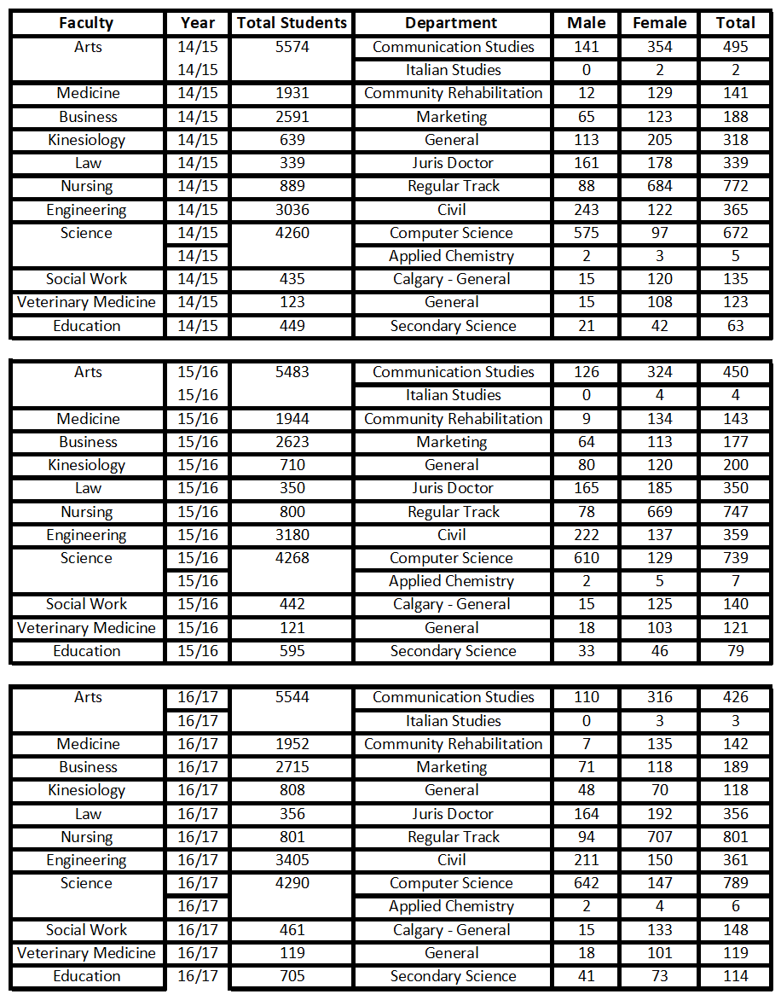
Design Direction in Sketches
In my sketches, my goal was to capture the idea of comparing faculties to begin with. I then wanted to introduce interactions such that, by tapping on a faculty in the respective presenta-tion/visualization design, you would receive information about all the departments in that facul-ty. Furthermore, when tapping on a specific department, you would receive more information regarding the gender ratios for that specific department. Another extension which can be added, which I did not include in either my sketches or my subset, is comparing the degree stream (for example, a BSc in Psychology vs a BA in Psychology)
I tried to show these ideas in my initial sketches mostly through the idea of presenting and com-paring each of the faculties by size. I used multiple variations of comparing by size. Some in-clude: bubbles, people, and text. In my refined sketches, I built on these ideas by showing the results of an interaction with the base visualization.
Initial 10 Sketches
My initial set of sketches focused on different ways to display the data in general, with a focus being on making it easily readable.
In my initial sketches, I considered showing trends in enrolment numbers over a 3 year period, as well as just comparing enrolment numbers between faculties.
Below please find my initial 10 sketches:
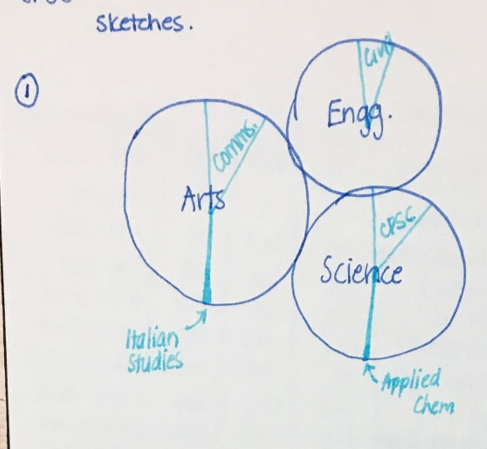
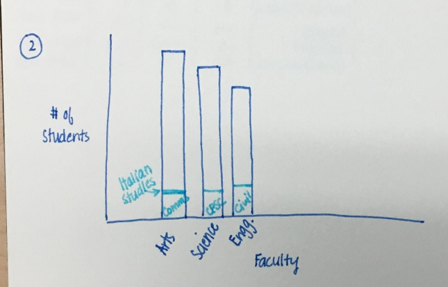
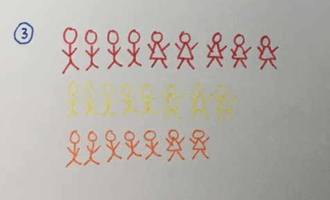
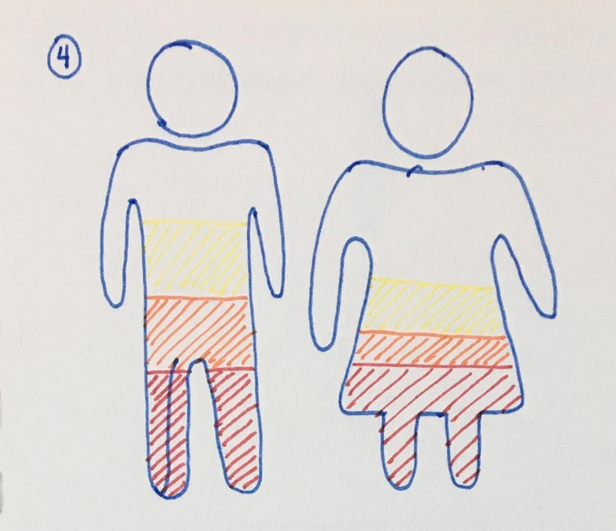
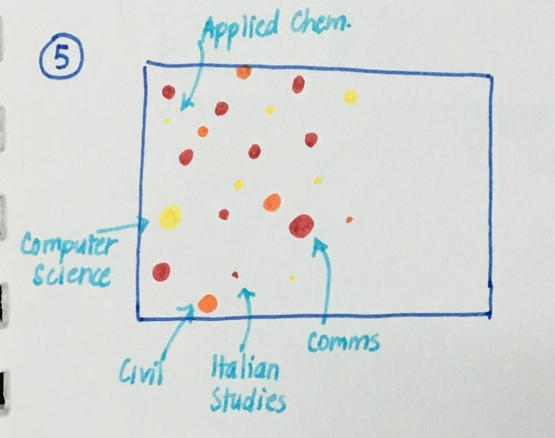
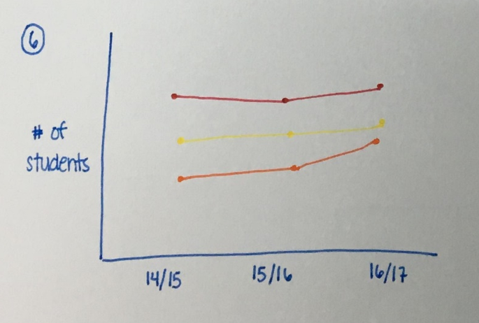
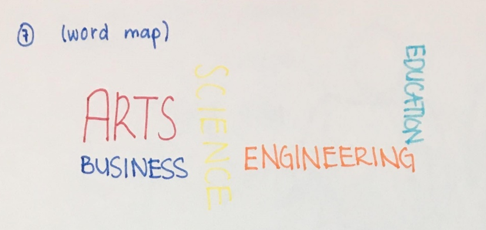
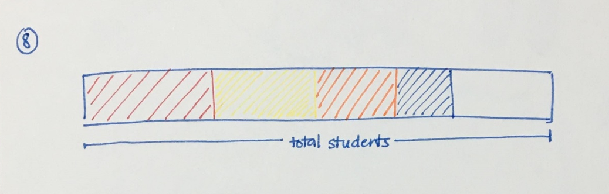
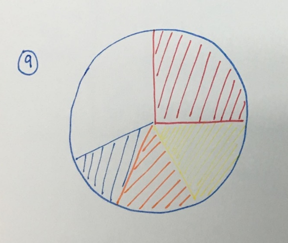
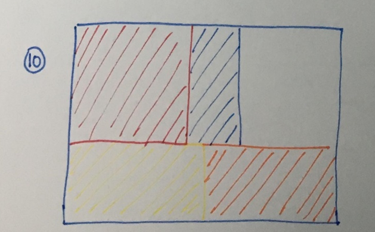
Refined 10 Sketches
My refined sketches focused a little bit more on the interaction which is to come later in the project. I focused my refined sketches on some of my initial sketches and tried to
further creatively explore some of the initial generic ideas.
Below please find my refined 10 sketches:
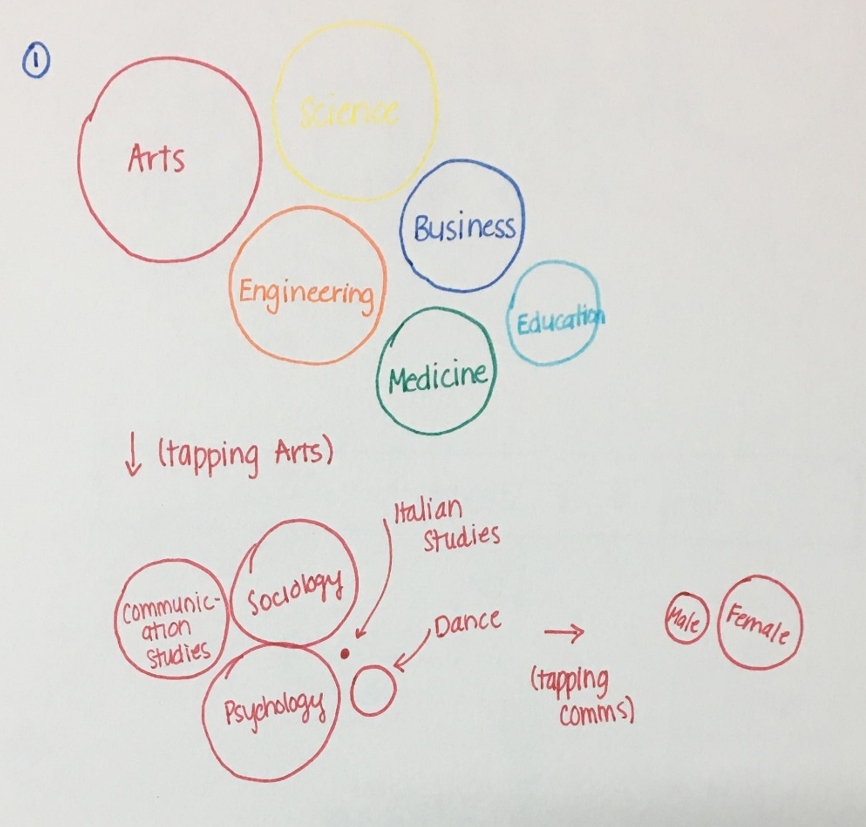
explain
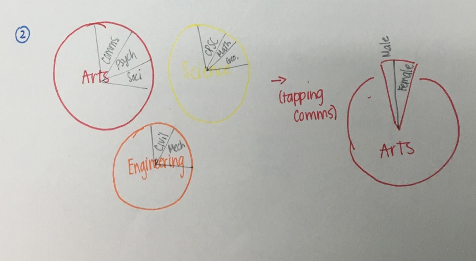
explain
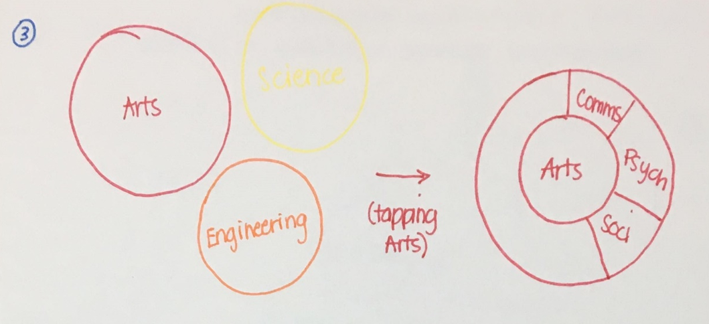
explain
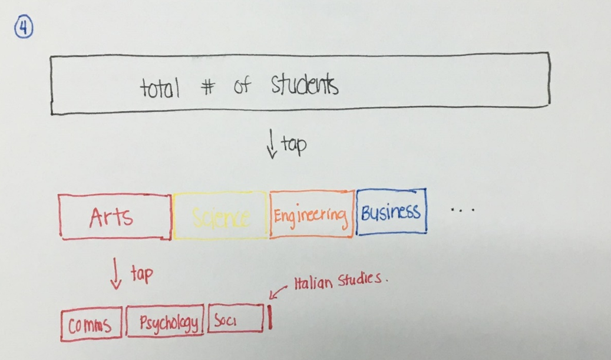
explain
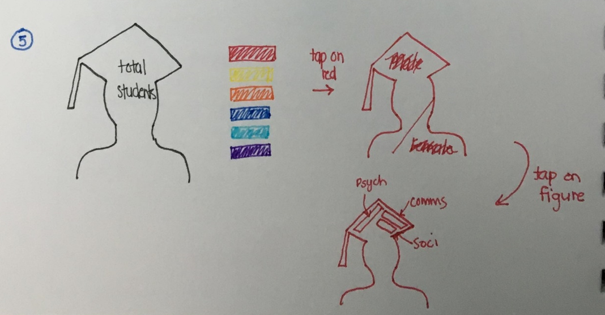
explain
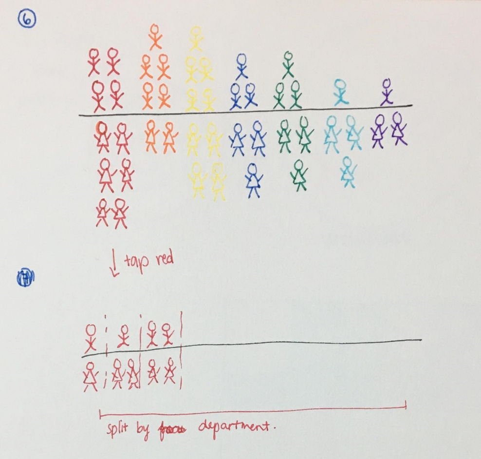
explain
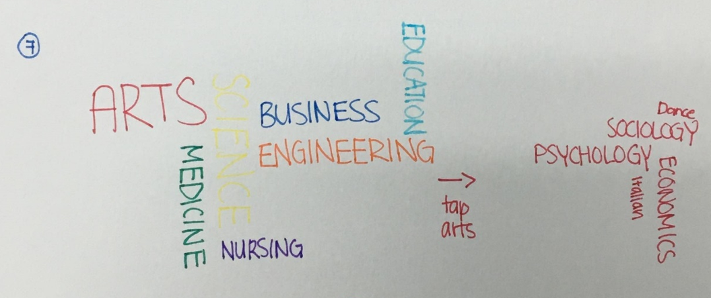
explain
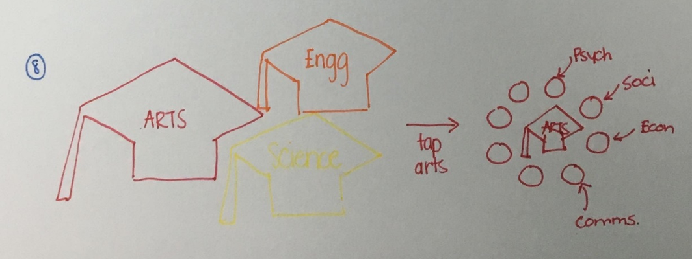
explain
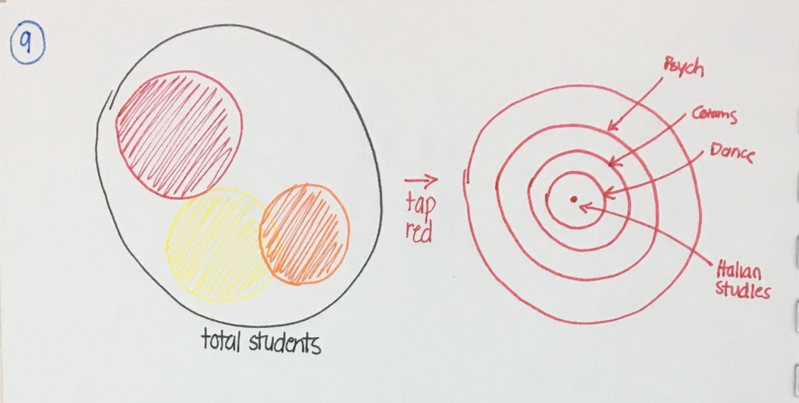
explain
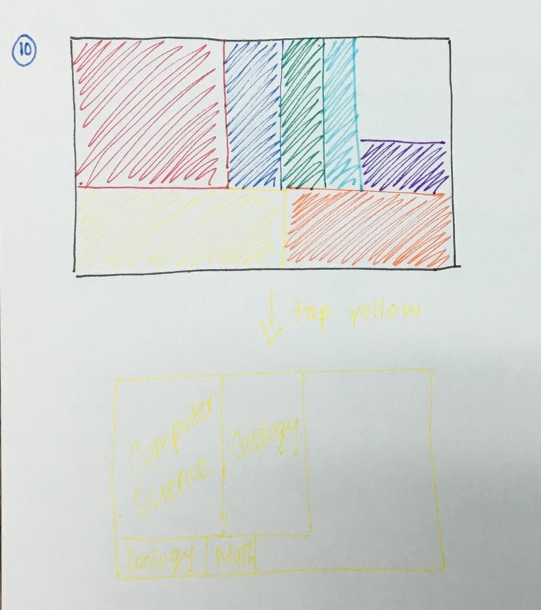
explain